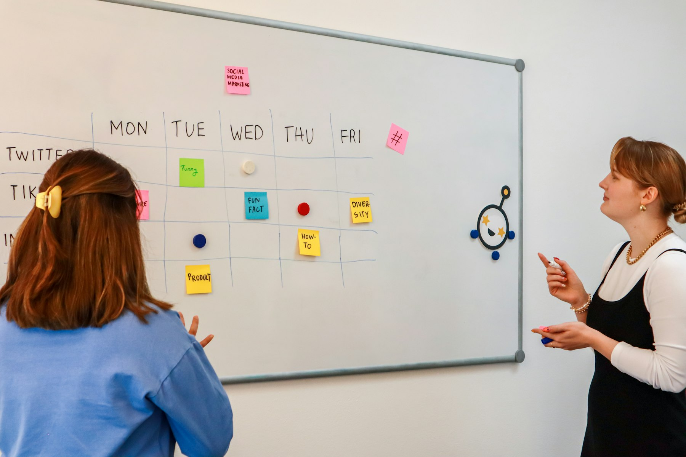
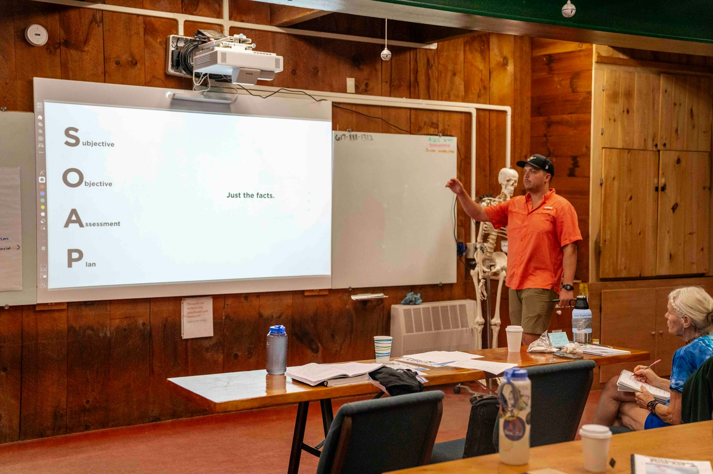

TL;DR
Blogging can offer stable income through content creation, often taking time to grow, whereas affiliate marketing can generate faster revenue if marketed effectively. Choose blogging for storytelling and community building, or affiliate marketing for quicker sales opportunities.
Who Should Choose Blogging and Who Should Opt for Affiliate Marketing?
Blogging suits those who love writing and have a vision for creating a loyal audience, aiming to monetize through ads, sponsorships, or product sales.
If you're passionate about sharing expertise or stories, this path offers a rewarding outlet. However, it's not for everyone; those who prefer to focus on sales and quick returns may find affiliate marketing more appealing.
Affiliate marketing appeals to those with a marketing mindset, willing to invest in promotional tactics without the necessity of extensive content c
Why Common Advice About Blogging and Affiliate Marketing Often Misses the Mark

### Why Common Advice About Blogging and Affiliate Marketing Often Misses the Mark
Much conventional wisdom suggests that blogging requires minimal effort and will generate passive income over time. While it’s true that successful blogs can provide ongoing revenue, the reality is that blogging demands consistent effort for content production and audience engagement.
For instance, many bloggers find that it takes 6-12 months just to build a loyal reader base, let alone start earning a significant income. Even after establishing a following, maintaining quality content can require 10-15 hours a week.
Without a strategic approach, bloggers may invest hundreds of hours only to see a modest income—perhaps around $100 to $1,000 a month after a year of hard work, depending on their niche and marketing strategy.
On the flip side, affiliate marketing is often portrayed as a 'get-rich-quick' scheme that requires little effort. Many newcomers dive in expecting to earn significant income shortly after launching their affiliate links.
For instance, an individual might believe they can easily earn $500 a month simply by placing a few affiliate banners on their site. However, the reality is often starkly different.
Most successful affiliate marketers invest considerable time in research, SEO, and audience building, frequently taking 3-6 months to optimize their strategies and see any substantial returns.
In fact, data shows that around 60% of affiliate marketers earn less than $200 per month, while only a small fraction, around 10%, reach figures above $5,000 monthly.
Consider the case of Sarah, who started a lifestyle blog incorporating affiliate links for wellness products. Initially, she spent two months creating content and promoting her blog on social media.
After six months, her traffic plateaued, and her affiliate earnings hovered around $50. Frustrated, Sarah started experimenting with SEO techniques and social media advertising.
It wasn't until her first year that she finally gained traction, earning about $1,200 in her twelfth month. However, she realized that the ongoing commitment and financial investment in ads were necessary trade-offs.
How to Build Your Blogging or Affiliate Marketing Workflow Effectively
Building a successful passive income stream through blogging or affiliate marketing involves a clear workflow. For blogging, the process often starts with defining your niche, followed by content creation, SEO optimization, and audience engagement through social media.
Here’s a simplified 5-step process: 1. Choose Your Niche - Focus on a specific topic. 2. Create High-Quality Content - Aim for SEO-optimized, targeted articles or videos. 3. Promote - Utilize social media or email newsletters. 4. Engage - Answer comments and foster community. 5. Monetize - Explore advertising options or sponsored posts.
For affiliate marketing, understand your target audience and select products that resonate with them. Steps include: 1. Research - Identify affiliate programs that fit your niche like Amazon Associates or ShareASale. 2. Create Value-Driven Content - Write reviews or how-to guides that include affiliate links. 3. Drive Traffic - Use paid ads or social media outreach. 4. Monitor Performance - Regularly check analytics to optimize campaigns.
5
Analyzing Income Potential of Blogging vs. Affiliate Marketing Over 6 Months
To illustrate the financial potential, let’s compare typical income growth from blogging versus affiliate marketing over six months. Blogging often starts slow, as it takes time to build an audience.
For instance, you might begin with $0 in the first month, reach $100 in the second, and potentially make $750 by the sixth month through ad revenue and sponsored content.
In contrast, if you invest in a targeted affiliate marketing strategy, you could earn significantly quicker. A well-promoted affiliate link might yield $200 in month two just from a well-written review on a popular product.
Over six months, with consistent promotion and traffic, earnings could soar to around $1,500.
Both methods can be lucrative, but they require different strategies, expertise, and upfront investments. Here's a snapshot of projected earnings:
| Month | Blogging Income | Affiliate Marketing Income |
|---|---|---|
| 1 | $0 | $0 |
| 2 | $100 | $200 |
| 3 | $300 | $600 |
| 4 | $450 | $800 |
| 5 | $600 | $1,200 |
| 6 | $750 | $1,500 |
Common Pitfalls in Blogging and Affiliate Marketing: What to Watch Out For

Understanding the pitfalls of both blogging and affiliate marketing is crucial in your decision-making. In blogging, many newcomers miscalculate the time commitment.
Content creation often takes longer than anticipated. If you target a weekly blog post that is poorly optimized, you may not attract much traffic, which leads to frustration.
Affiliate marketers often fall into the trap of choosing products without knowing their audience. Selecting an affiliate program out of current trends can backfire; for example, promoting a popular gadget that doesn’t resonate with your core audience likely won't convert.
Regularly revising your strategy is essential to avoid these common mistakes. Moreover, avoid relying solely on one platform—be it a blog or affiliate network.
Deciding Your Next Steps: Blogging or Affiliate Marketing?
Choosing between blogging and affiliate marketing isn't just a matter of initial interest; it's about aligning efforts with your long-term goals.
If you're curious about storytelling or building a community, consider starting a blog. Use your niche to drive organic traffic and leverage advertising opportunities over time.
Aim for small wins every month, and always iterate based on analytics.
If you're more sales-oriented and want immediate results, affiliate marketing can be more suitable. Test several programs, analyze which generate better conversion rates, and focus marketing resources on those.
Think about future scaling options too—could these methods complement each other? Using a blog to drive traffic to your affiliate promotions can be a hybrid success strategy.
FAQ
What is the average income for bloggers vs affiliate marketers?
On average, bloggers might earn anywhere from $500 to $5,000 a month after several months of consistent work, while affiliate marketers can expect earnings in a similar range depending on their strategies and audience engagement.
How long does it usually take to start earning from these methods?
Blogging often takes 6-12 months to see significant income, while affiliate marketing can yield quicker results, sometimes within days or weeks if promoted effectively.
This article has been reviewed for practical usefulness and is updated to include current trends and insights.
Next step
Use the article as a decision point, not just reading material. Your next system matters more than more browsing.
Search more articles
Find related tools, workflows, and guides.
Photo credits
- Photo 1: Lala Azizli via Unsplash
- Photo 2: Walls.io via Unsplash
- Photo 3: Walls.io via Unsplash
- Photo 4: Walls.io via Unsplash
- Photo 5: Frederick Shaw via Unsplash